Central Puglia: 4 Days in Bari, Trani, Alberobello, Monopoli & Polignano a Mare
As I mentioned in my previous article, Anna and I spent our Easter holidays between Matera and Puglia - and this post is dedicated to the four days we explored Central Puglia.
From the narrow alleys of Bari Vecchia to the stunning Cathedral of Trani, from the iconic trulli of Alberobello to the seaside charm of Monopoli and Polignano a Mare, this region truly has it all. Ready to explore? Let’s dive into Puglia!
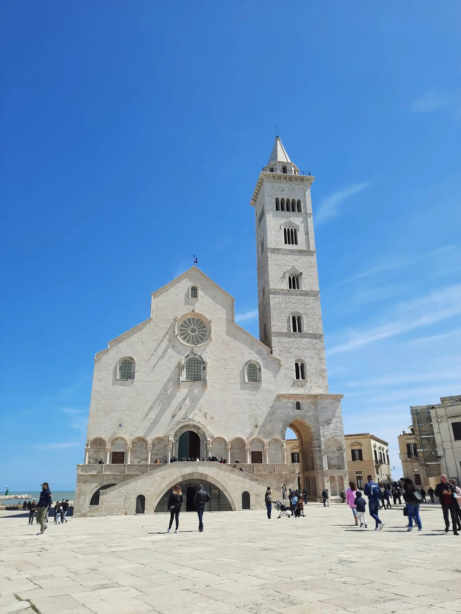
The majestic Trani Cathedral in the heart of the old town
Save this guide for your next trip - you’ll want to follow this itinerary step by step.
Our 4-Day Puglia Itinerary
| Day | Plan |
|---|---|
| Day 0 | Flight to Bari → Overnight stay |
| Day 1 | Altamura → Matera |
| Day 2 | Matera |
| Day 3 | Alberobello → Monopoli |
| Day 4 | Monopoli (Easter Day) |
| Day 5 | Trani → Polignano a Mare → Bari |
| Day 6 | Bari → Flight back |
Arrival in Puglia: Bari & Altamura
Although our real Puglia adventure began after leaving Matera, we actually got a first taste of the region upon landing at Bari Airport.
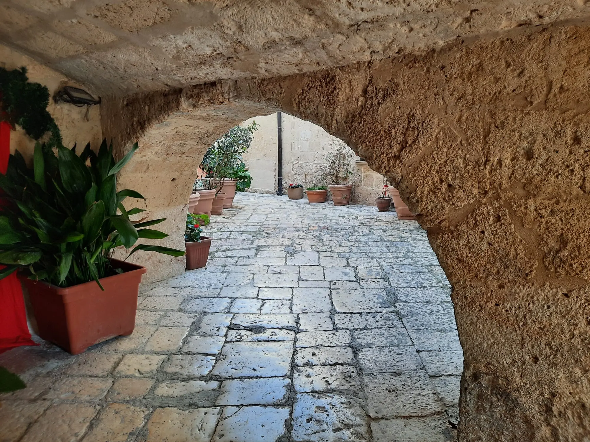
Arco Basso, one of the lowest arches in Europe, Altamura
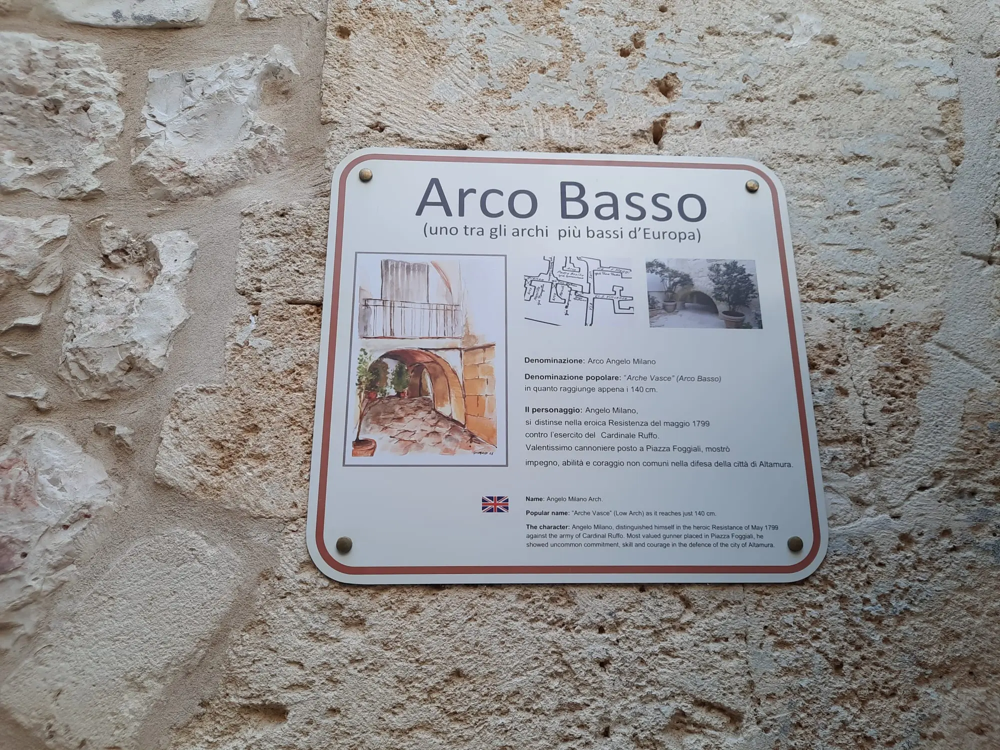
The sign marking Arco Basso in Altamura
After picking up our rental car, we decided - almost on a whim - to stop in Altamura, known as the "city of bread". Don’t expect bread stalls on every corner, but the historic center is charming, with narrow streets and beautiful stone arches. We had a quick lunch in a local bakery before continuing our journey.
Days 1 & 2: Alberobello & Monopoli
After two sunny days in Matera, we were greeted by cloudy skies as we headed to Alberobello.
Alberobello at a Glance
| Highlight | Info |
|---|---|
| UNESCO Status | World Heritage Site since 1996 |
| Main Area | Rione Monti |
| Visit Duration | About 1 hour |
| Tip | Go early to avoid crowds |
The trulli of Alberobello are truly unique - one of the most iconic sights in Italy. Despite its small size, the area is packed with souvenir shops, which add color but also make it feel slightly commercial. Still, it’s an absolute must-see.
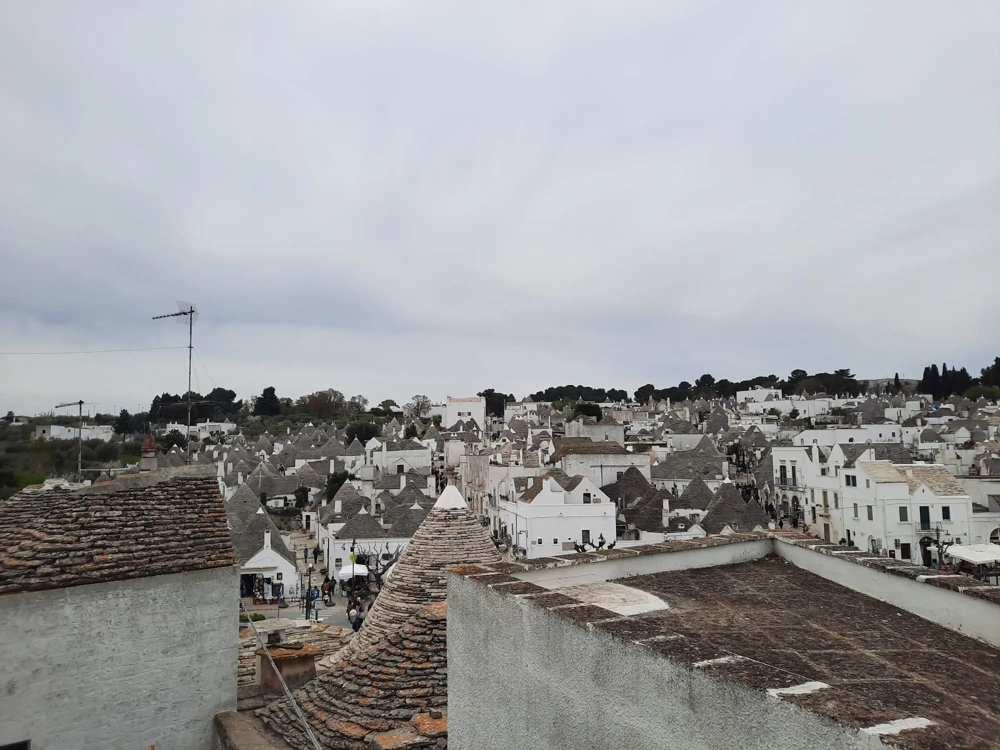
A beautiful view over the Trulli of Alberobello
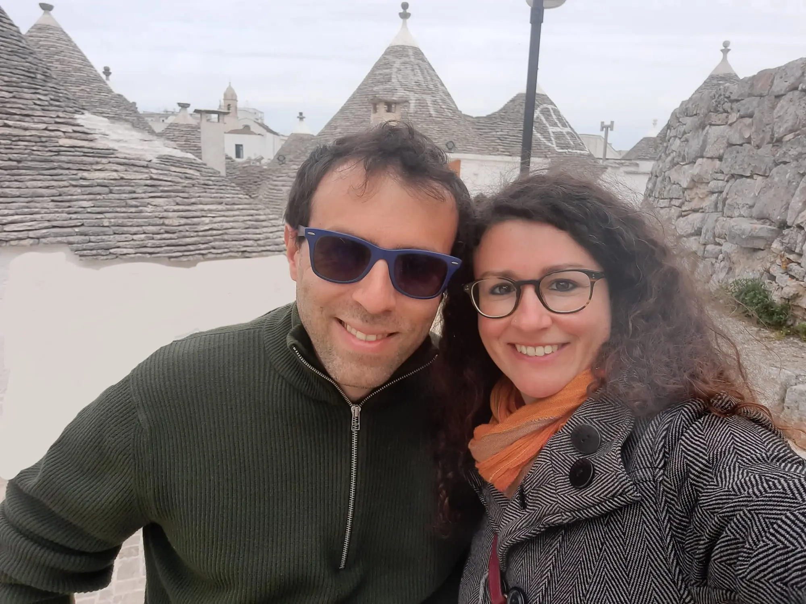
Ricky and Anna exploring the trulli of Alberobello
After enjoying a delicious focaccia, we drove to Monopoli, where we stayed for two nights.
Monopoli Highlights
| Place | Why Visit |
|---|---|
| Historic Center | Charming streets and local vibe |
| Seafront | Relaxing walk by the sea |
| Castello di Carlo V | 16th-century fortress |
| Churches | Surprisingly high density |
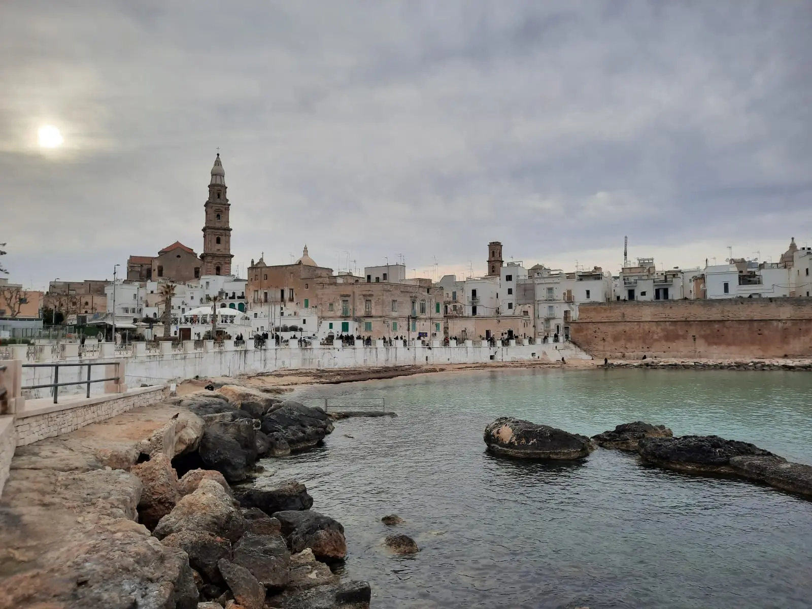
A scenic view of Monopoli's old town by the sea
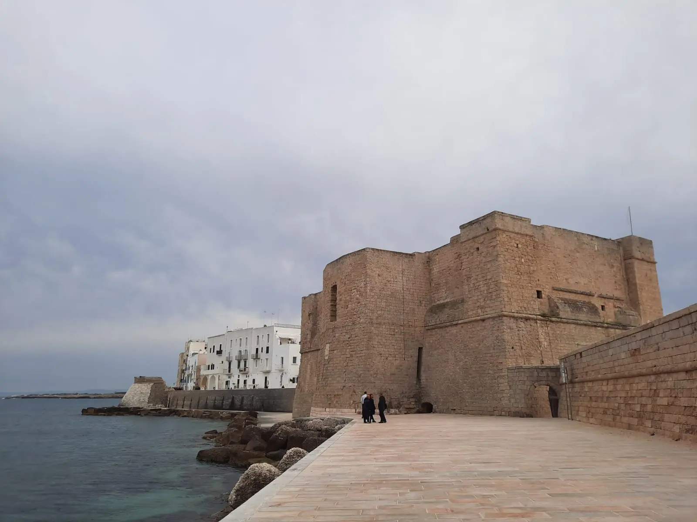
The historic Castello di Carlo V overlooking the sea in Monopoli
Monopoli immediately impressed us with its authentic atmosphere and great food scene. Unfortunately, Easter Sunday brought heavy rain, forcing us to stay indoors for much of the day. Luckily, the sun returned the next morning - and so did our energy!
Day 3: Trani, Polignano a Mare & Bari
After breakfast, we headed north to Trani instead of going south to Ostuni due to better weather conditions.
Trani Highlights
| Place | Highlight |
|---|---|
| Cathedral of San Nicola Pellegrino | Stunning seaside location |
| Swabian Castle | Built in 1233 under Frederick II |
| Harbour | Lively and well-maintained |
| Villa Comunale | Seaside garden |
Trani was a wonderful surprise. The cathedral overlooking the sea is simply breathtaking. Although the interior was under restoration, we managed to visit the crypt just before closing - pure luck!
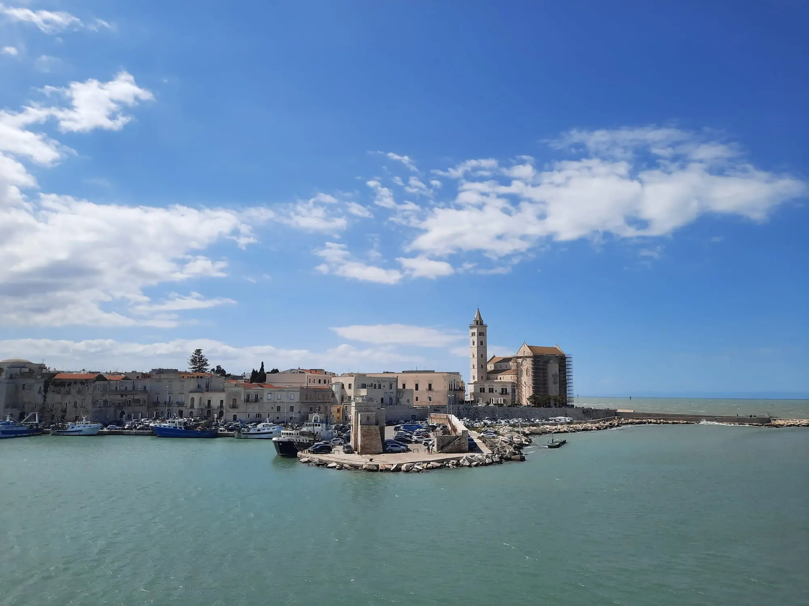
A scenic view of Trani old town
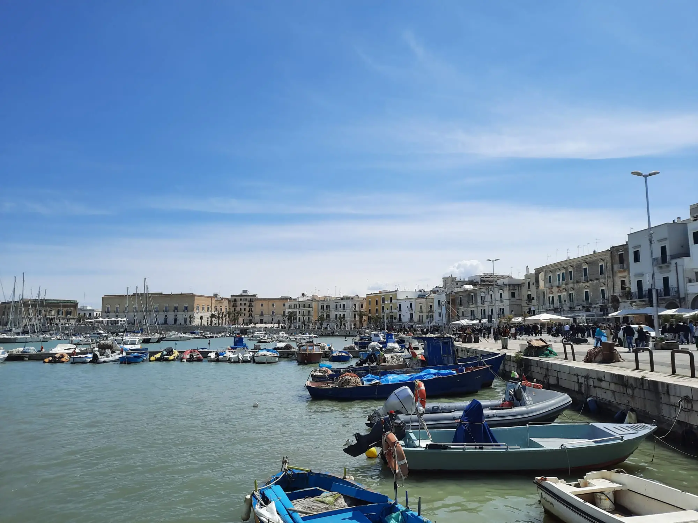
The harbour of Trani
After lunch by the harbour and a relaxing walk, we moved on to Polignano a Mare.
Polignano a Mare Highlights
| Place | Highlight |
|---|---|
| Historic Center | Built on cliffs above the sea |
| Seafront Walk | Scenic views |
| Lama Monachile | Iconic beach |
Despite some parking struggles, Polignano’s beauty made everything worth it. The dramatic cliffs and the famous Lama Monachile beach are unforgettable.

Powerful waves at Lama Monachile beach in Polignano a Mare
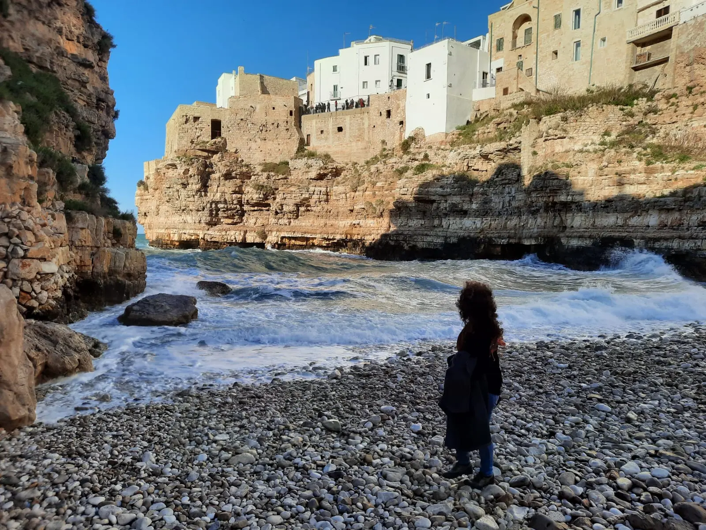
Anna enjoying the view of the Adriatic Sea at Lama Monachile
In the evening, we returned to Bari, explored Bari Vecchia, and enjoyed an incredible dinner with seafood orecchiette and a cold Peroni beer.
Day 4: Exploring Bari
We dedicated our final day entirely to Bari.
Bari Highlights
| Place | Highlight |
|---|---|
| Bari Vecchia | Authentic old town atmosphere |
| Cathedral of San Sabino | Main cathedral |
| Basilica of San Nicola | Major pilgrimage site |
| Lungomare | Perfect for relaxing walks |
| Teatro Margherita | Contemporary art museum |
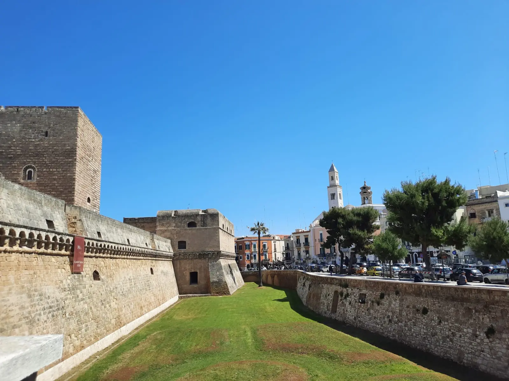
The Castello Normanno-Svevo in Bari
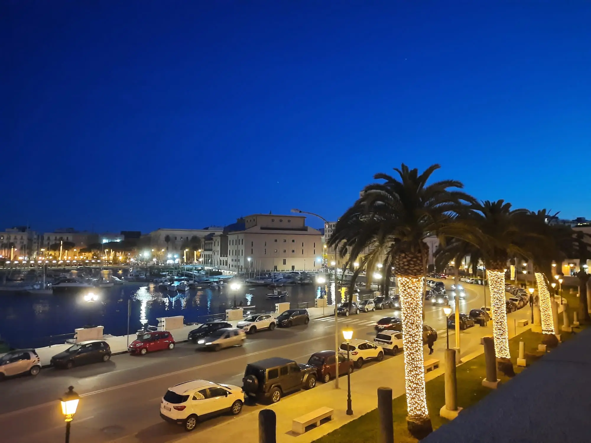
Bari by night with its illuminated streets and seafront
The Basilica of San Nicola, built between 1089 and 1197, is one of the most important religious sites in Southern Italy, attracting both Catholic and Orthodox pilgrims.
A Touch of Art: Banksy Exhibition
We also visited an exhibition dedicated to Banksy at Teatro Margherita. Seeing works like "Girl with Balloon" and "Love is in the Air" was a highlight, especially after my previous experience with street art in Bethlehem.
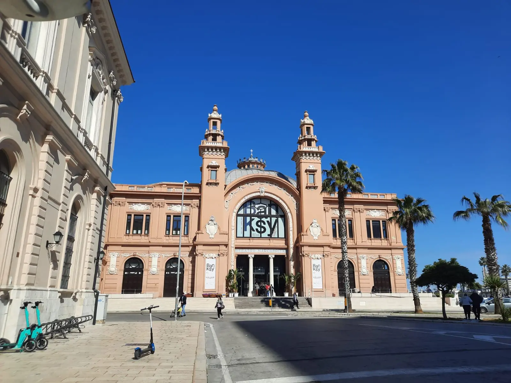
Teatro Margherita in Bari hosting a Banksy exhibition
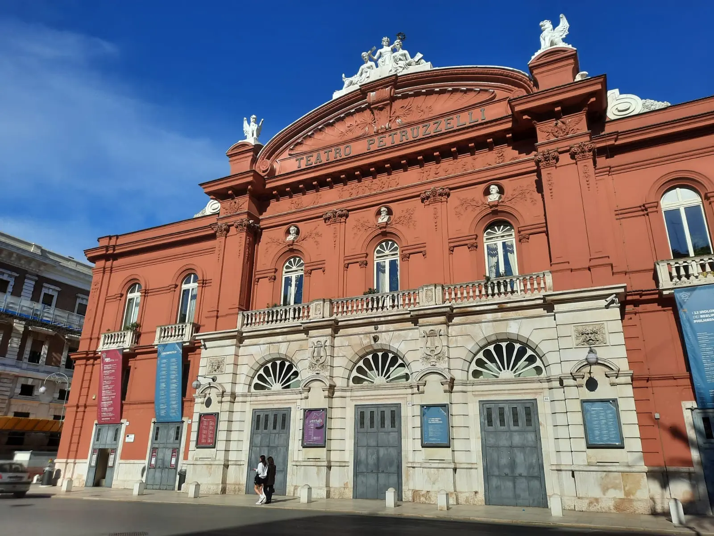
The historic Teatro Petruzzelli in Bari
After one last walk along the seafront and enjoying a traditional Italian crema di caffè near the Teatro Petruzzelli, it was time to head back to the airport.
Final Thoughts
After our incredible two days in Matera, Central Puglia exceeded our expectations. Less famous than Salento, this area offers a perfect mix of culture, seaside landscapes, history, and incredible food.
From Trani’s stunning cathedral to the trulli of Alberobello, from Bari’s vibrant old town to the charm of Monopoli and Polignano a Mare - this region truly has something special.
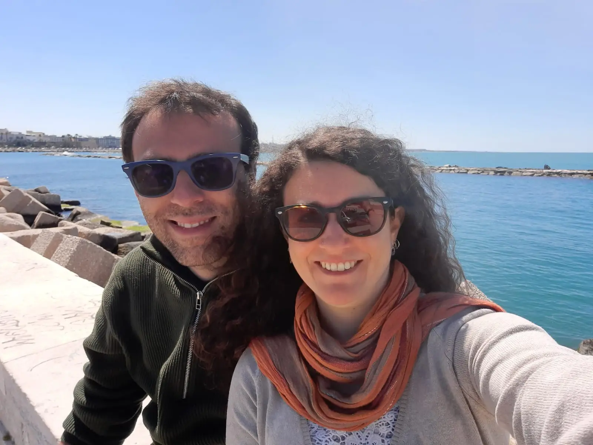
Ricky and Anna enjoying a sunny walk along the seafront in Bari
Have you ever been to Puglia? Let me know your favorite spot!